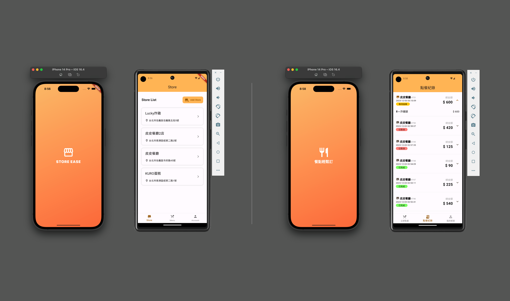

<article class="col-6 col-12-xsmall work-item">
  <a href="#" class="image fit thumb" data-video-id="YOUR_VIDEO_ID">
    
  </a>
  <h3>Ordering System (Backend)</h3>
  <p>
    一款具有商店管理與客戶點餐的餐廳點餐系統，商業使用者可輕鬆管理多個商店、菜單與座位，並即時接收客戶點餐訂單。而客戶也可掃描QR
    Code進行快速點餐，及時接收餐點製作狀態...
  </p>
</article>
